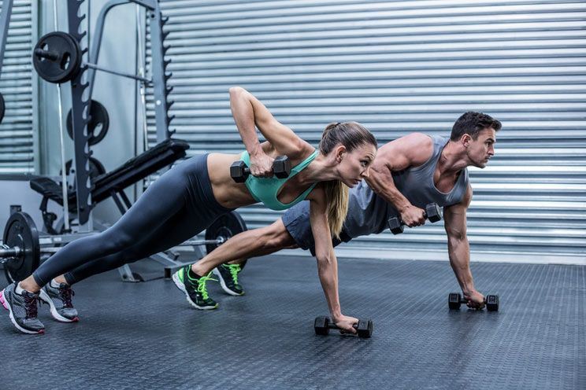

Grupni program
Grupni fitnes u FLex-u se odvija u dve najsavremenije opremljena fitnes studija. Vrhunska rasveta i ozvučenje čine naše treninge nezaboravnim iskustvom koje se može porediti sa najboljim žurkama.
BODYATTACK
--- Energičan kardio trening koji kombinuje pokrete iz različitih sportova sa trčanjem, iskoracima, skokovima, ali i vežbama snage kao što su sklekovi i čučnjevi. Izazovite svoje granice i izađite sa treninga sa osećajem uspeha. Zbog svoje jednostavnosti i pokreta koji se lako pamte, BODYATTACK je prihvaćen od najrazličitijih tipova vežbača. ---
- Rezultati:
Uvećanje gipkosti, koordinacije, snage i izdržljivosti. Pozitivan uticaj na srce i pluća. Intenzivno sagorevanje kalorija.
- Formati trajanja treninga:
45 i 55 minuta
- Intenzitet:
Visok
- Potrošnja kalorija:
prosečno 730 kcal
- Instruktori koji drže ovaj trening:
Jelena Bajčetić i Marina Delić.
BODYBALANCE
--- Tokom BODYBALANCE treninga inspirativna lista pesama pravi ugođaj dok se krećete kroz seriju joga pokreta uz elemente taj čija i pilatesa. Kontrola disanja predstavlja važan deo svakog pokreta, a treneri će uvek ponuditi opcije lakšeg načina izvođenja vežbi za početnike. Ovaj trening napustićete sa osećajem smirenosti, snage i predivnog balansa. ---
- Rezultati:
Unapređenje fleksibilnosti i pokretljivosti. Oblikovanje tela i poboljšanje mentalnog fokusa.
- Formati trajanja treninga:
45 i 55 minuta
- Intenzitet:
Nizak
- Potrošnja kalorija:
prosečno 390 kcal
- Instruktori koji drže ovaj trening:
Aleksandra Botić i Jovana Mjerimačka.
BODYPUMP
--- Originalni trening sa šipkom i tegovima koji je postao globalni fenomen. Koristeći opterećenje male ili srednje težine uz veliki broj ponavljanja, BODYPUMP pruža zaokružen trening celog tela. Uz sjajnu muziku, instruktori će vas voditi kroz naučno zasnovane pokrete i tehnike i omogućiti da postignete više! ---
- Rezultati:
Oblikovanje tela, uvećanje snage i izdržljivosti.
- Formati trajanja treninga:
30, 45 ili 55 minuta
- Intenzitet:
Srednje visok
- Potrošnja kalorija:
prosečno 560 kcal
- Instruktori koji drže ovaj trening:
Saša Urankar, Jelena Bajčetić i Dejan Gavrić.